기계정비산업기사 (2015-03-08 기출문제)
1과목: 공유압 및 자동화시스템
1. 공압 모터의 장점이 아닌 것은?
- 에너지 변환 효율이 매우 높다.
- 폭발의 위험성이 있는 곳에서도 안전하다.
- 회전수와 토크를 자유롭게 조정할 수 있다.
- 다른 원동기에 비해 온도, 습도의 영항이 작다.
(정답률: 77%)

2. 그림과 같은 회로에 대한 설명으로 옳은 것은?
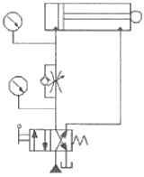
- 미터인 (Meter-in) 방식의 전진 속도 조절 회로이다.
- 미터인 (Meter-in) 방식의 후진 속도 조절 회로이다.
- 미터아웃(Meter-Out) 방식의 전진 속도 조절 회로이다.
- 미터아웃(Meter-Out) 방식의 후진 속도 조절 회로이다.
(정답률: 74%)
3. 그림의 변위-단계선도에서 실린더 A, B의 작동순서는?
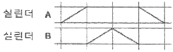
- 실린더A전진 - 실린더A후진 - 실린더B전진 - 실린더B후진
- 실린더A전진 - 실린더B후진 - 실린더A후진 - 실린더B후진
- 실린더B전진 - 실린더B후진 - 실린더A전진 - 실린더A후진
- 실린더A전진 - 실린더B전진 - 실린더B후진 - 실린더A후진
(정답률: 90%)
4. 공기의 압력이 일정할 때 온도와 체적과의 관계로 옳은 것은?
- 공기의 체적은 온도에 정비례한다.
- 공기의 체적은 온도에 반비례한다.
- 공기의 체적은 온도의 제곱에 정비례한다.
- 공기의 체적은 온도의 제곱에 반비례한다.
(정답률: 74%)
5. 펌프의 토출랑이 15ℓ/min 이고 유압실린더에서의 피스톤직경이 32mm, 배관경이 6mm일 때 배관에서의 유속(A)과 피스톤의 전진속도(B)는 각각 몇 m/sec 인가?
- (A) 0.88 (B) 0.03
- (A) 5.31 (B) 1.87
- (A) 8.84 (B) 0.31
- (A) 53.1 (B) 18.7
(정답률: 59%)
6. 교축 밸브에 체크 밸브를 붙인 것으로 공압 회로에서 실린더의 속도를 제어하기 위한 밸브는?
- 급속 배기 밸브
- 한방향 유량제어 밸브
- 방향 제어 밸브
- 양방향 유량제어 밸브
(정답률: 66%)
7. 비접촉식 공압 근접센서의 원리는?
- 파스칼의 원리
- 에너지 보존의 법칙
- 자유분사 원리
- 뉴턴의 운동 방정식
(정답률: 62%)
8. 그림과 같은 회로의 명칭은? (단, A, B는 입력, C는 출력이다.)
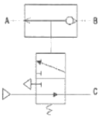
- AND
- NOT
- NOR
- NAND
(정답률: 59%)
9. 유압장치 작동 중 관로의 흐름이 밸브 등에 의해 순간적으로 차단될 때, 유체의 운동에너지가 탄성에너지로 변하여 나쁜 영향을 미치는 것은?
- 오리피스(orifice)
- 채터링 (chattering)
- 캐비테이션(cavitation)
- 서지압력(surge pressure)
(정답률: 62%)
10. 진공 발생기에서 진공이 형성되는 원리와 가장 관련이 깊은 것은?
- 샤를의 법칙
- 보일의 법칙
- 파스칼의 원리
- 벤츄리 원리
(정답률: 64%)
11. 유도 전동기의 회전속도에 영향을 주지 못하는 것은?
- 극수
- 슬립(slip)
- 주파수
- 정전기
(정답률: 74%)
12. 유압 실린더에서 면적비가 1 : 0.5 (피스톤측 면적 : 피스톤 로드측 면적)이라면 유랑이 일정할 때 피스톤의 후진운동속도는 전진운동속도의 몇 배 인가?
- 0.5
- 1.5
- 2
- 3
(정답률: 71%)
13. PLC를 이용하여 시스템을 제어하는 과정에서 프로그램 에러를 찾아내어 수정하는 작업은?
- 코딩
- 디버깅
- 모니터링
- 프로그래밍
(정답률: 85%)
14. 서미스터의 분류에 해당되지 않는 것은?
- NTC
- PNP
- CTR
- PTC
(정답률: 76%)
15. 유압시스템에 사용되는 작동유에 대한 수분의 영향과 가장 거리가 먼 것은?
- 밀봉작용이 저하된다.
- 작동유의 방청성을 저하시킨다.
- 금속 촉매 작용을 저하시킨다.
- 작동유의 산화 및 열화를 촉진시킨다.
(정답률: 60%)
16. 공압시스템에서 공급 유량부족으로 인한 고장 발생 상황으로 옳은 것은?
- 갑작스런 압력강하로 실린더가 층분한 추력을 발생시킬 수 없다.
- 밸브가 고착을 일으켜 제대로 동작이 일어나지 못하게 한다.
- 과도한 마찰이나 스프링의 손상으로 기계적 스위칭 동작에 이상이 발생한다.
- 반지름 방향의 하중이 작용하면 피스톤로드 베어링이 빨리 마모된다.
(정답률: 66%)
17. PLC(Programmable Logic Control)는 다음 중 어느 영역을 담당하는 장치인가?
- 센서(sensor)
- 엑추에이터(actuator)
- 프로세서(processor)
- 소프트웨어(software)
(정답률: 78%)
18. 빛을 이용하는 센서로 사용되는 것만을 나열한 것은?
- 열전쌍, 초전 센서
- 포토 커플러, 조도센서
- 초음파 센서, 차동 트랜스
- 초음파 센서, 파이로 센서
(정답률: 83%)
19. 단동 실린더에 대한 설명으로 틀린 것은?
- 피스톤의 전진 및 후진운동을 통해 일을 해야 할 경우 사용한다.
- 피스톤의 귀환은 내장된 스프링의 힘으로 이루어진다.
- 공압의 경우, 귀환 스프링으로 인하여 최대 행정거리가 100[mm] 정도로 제한된다.
- 공압의 경우, 귀환장치로 탄력있는 인조고무를 사용하기도 한다.
(정답률: 65%)
20. 제어신호의 간섭을 제거하기 위하여 캐스케이드 회로 설계방법을 이용하었을 때의 특징이 아닌 것은?
- 오버센터 작동기구를 사용한다.
- 특정한 밸브를 사용하지 않고 일반적인 밸브를 사용한다.
- 입력신호와 출력신호가 각각 대응되어 제어의 신뢰성이 보장된다.
- 제어회로가 복잡하여 밸브가 많아지면 회로 내의 입력 강화로 인한 스위칭 시간의 지연과 배선이 복잡해진다.
(정답률: 47%)
2과목: 설비진단관리 및 기계정비
21. 설비 보전 조직 설계 시 고려 사항으로 가장 거리가 먼 것은?
- 생산 형태
- 설비의 특징
- 생산제품의 특성
- 기업 경영 방식
(정답률: 81%)
22. 사람이 가청할 수 있는 최소 가청음의 세기[W/m2]는? (단, W/m2 = 음향출력/표면적)
- 10-12
- 20-12
- 100-12
- 200-12
(정답률: 76%)
23. 문제 해결방식에 대한 순서로 ( ) 내용으로 옳은 것은?
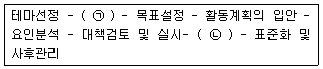
- ㉠ 현상 파악, ㉡ 효과 파악
- ㉠ 현상 파악, ㉡ 개선 활동
- ㉠ 문제 분석, ㉡ 개선 활동
- ㉠ 문제 분석, ㉡ 데이터 정리
(정답률: 63%)
24. 보전용 자재의 재고문제에 관한 정량발주방식의 형태 중 주문량과 주문점을 균등하게 한 것으로서 용량이 같은 저장 용기를 교대로 사용하는 방식은?
- Double - Bin 방식
- 추출후 발주법
- 사용고 발주방식
- 정기 발주 방식
(정답률: 71%)
25. 회전기계의 정격 회전속도가 1800rpm 일 때 이설비가 5400rpm 의 진동성분을 발생한다면 이에 대한 설명으로 옳은 것은?
- 30Hz 진동 성분이다.
- 60Hz 진동 성분이다.
- 1차 배수 성분이다.
- 3차 배수 성분이다.
(정답률: 74%)
26. 진동 차단기의 변위가 걸리는 힘에 비례할 때 시스템의 고유진동수(ω)와 정적 변위(δ)와의 관계식으로 옳은 것은?
- ω = 5π/δ
- ω = 5πδ
- ω = 10π/δ
- ω = 10π/√δ
(정답률: 62%)
27. 등청감곡선(equal loudness contours)이란?
- 소음의 크기를 음압에 따라 표시한 곡선
- 사람이 귀로 듣는 같은 크기의 음압을 주파수별로 구하여 작성한 곡선
- 정상 청력을 가진 사람이 1000Hz에서 들을 수 있는 최소 음압의 실효치
- 음의 진행방향에 수직하는 단위 면적을 단위시간에 통과하는 음에너지 양
(정답률: 70%)
28. 설비진단 기법 증 진동 분석법으로 알 수 없는 것은?
- 송풍기의 언밸런스(unbalance)
- 설비의 피로에 의한 수명을 해석
- 유압 밸브의 누설(Ieak) 진단
- 베어링의 결함
(정답률: 57%)
29. 설비관리기능 중 지원기능으로 가장 거리가 먼 것은?
- 보전인력관리 및 교육훈련
- 보전자재 선정 및 구매
- 포장, 자재취급, 저장 및 수송
- 부품대체(교체) 분석
(정답률: 65%)
30. 손상된 기어에서 나타나는 주파수의 특징은?
- 축회전 주파수가 나타난다.
- 축회전 주파수의 배수로 나타난다.
- 축회전 주파수의 분수로 나타난다.
- 축회전 주파수×기어 잇수로 나타난다.
(정답률: 72%)
31. 설비투자의 경제성 평가에 있어서 각 대안의 미래의 모든 수입과 지출을 일정 동일 액으로 바꿔서 비교 평가하는 방법은?
- 연차등가액법
- 수익률법
- 현가비교법
- 자본회수기간법
(정답률: 57%)
32. 소음원으로부터 거리를 2배 증가시키면 음압도(dB)는 어떻게 변하는가?
- 2배 증가한다.
- 1/2로 감소한다.
- 6dB 증가한다.
- 6dB 감소한다.
(정답률: 71%)
33. 설비 관리 조직의 계획상 고려되어야 할 사항으로 가장 거리가 먼 것은?
- 제품의 품질
- 설비의 특징
- 지리적 조건
- 외주 이용도
(정답률: 62%)
34. 라인별 배치라고도 하며, 공정의 계열에 따라 각 공정에 필요한 기계가 배치되고 대량생산에 적합한 설비배치는?
- 기능별 배치
- 제품별 배치
- 혼합별 배치
- 제품 고정형 배치
(정답률: 73%)
35. 정현파 신호에서 양진폭(peak to peak) 은 피크 진폭 값의 몇 배인가?
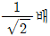
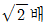
- 1배
- 2배
(정답률: 51%)
36. 시스템을 구성하는 요소 중 피드백에 속하는 것은?
- 원료
- 제품
- 제품 특성의 측정치
- 설비
(정답률: 71%)
37. 설비보전표준의 분류와 가장 거리가 먼 것은?
- 설비 검사 표준
- 설비 성능 표준
- 정비 표준
- 수리 표준
(정답률: 65%)
38. 설비관리의 기능과 가장 거리가 먼 것은?
- 실행 기능
- 기술 기능
- 개발 기능
- 일반관리 기능
(정답률: 73%)
39. 다음 진동 측정용 센서 중 접촉형은?
- 압전형
- 용량형
- 와전류형
- 전자 광학식
(정답률: 72%)
40. 설비를 만족한 상태로 유지하여 막을 수 있었던 생산상의 손실을 기회손실이라 하는데 이러한 기회손실에 해당하지 않는 것은?
- 휴지손실
- 준비손실
- 회복손실
- 재고손실
(정답률: 64%)
3과목: 공업계측 및 전기전자제어
41. 진리표의 논리회로는?
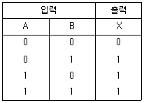
- AND
- OR
- NOR
- NAND
(정답률: 70%)
42. 절연저항 측정 시 가장 많이 사용되는 계기는?
- 메거
- 캘빈더블
- 휘트스톤 브리지
- 코올라시 브리지
(정답률: 79%)
43. 시퀀스도 작성방법의 설명으로 틀린 것은?
- 각 기기는 전원이 투입되어 작동되는 상태로 작성한다.
- 각 기호는 전원이 투입되지 않은 상태로 작성한다.
- 기기명으로 첨가시키는 문자기호는 시퀀스제어 기호를 사용한다.
- 각 접속선은 동작순서에 따라 좌로부터 우로 배열하여 그린다.
(정답률: 67%)
44. 프로세스 제어에 속하지 않는 것은?
- 압력
- 유량
- 온도
- 자세
(정답률: 81%)
45. 전동밸브의 제어성을 양호하게 하기 위하여 사용되는 포지셔너(positioner) 는?
- 전기-전기식 포지셔너
- 전기-유압식 포지셔너
- 전기-공기식 포지셔너
- 공기-공기식 포지셔너
(정답률: 74%)
46. 제어 조작용 기기로서 큰 전류가 흘러도 안전한 큰 전류 용량의 접점을 가지고 있는 조작용 기기는?
- 전자 타이머
- 전자 릴레이
- 전자 개폐기
- 전자 밸브
(정답률: 67%)
47. 컬렉터접지 증폭기의 일반적인 특징이 아닌 것은?
- 입력 임피던스는 크다.
- 출력 임피던스는 작다.
- 입력과 출력전압 신호는 역위상이다.
- 안정적이고 왜곡이 적다.
(정답률: 65%)
48. 일명 PD미터라고도 부르며 오발(OVAL)기어형과 루츠(ROOTS)미터형을 주로 사용하고 있는 유량계는?
- 전자 유량계
- 와류식 유량계
- 용적식 유량계
- 터빈식 유량계
(정답률: 64%)
49. 불순물 농도가 가장 큰 반도체 소자는?
- 제너 다이오드
- 터널 다이오드
- FET
- SCR
(정답률: 56%)
50. 접지선의 색은?
- 청색
- 적색
- 황색
- 녹색
(정답률: 70%)
51. 최대눈금 5mA의 직류 전류계로 50A 까지의 전류를 측정하려면 악 몇 Ω의 분류기가 필요한가? (단, 직류 전류계의 내부저항은 10옴 이다.)
- 0.001
- 0.01
- 0.1
- 0.2
(정답률: 45%)
52. 접촉방식 온도계가 아닌 것은?
- 압력온도계
- 저항온도계
- 열전온도계
- 방사온도계
(정답률: 77%)
53. 연산 증폭기의 구조 (동작흐름)이다. ( ) 안에 알맞은 것은?
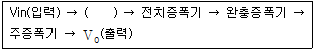
- 가산기
- 감산기
- 차동증폭기
- 전압비교기
(정답률: 70%)
54. 어떤 회로에서 저항 양단 전압의 참값이 40V 이나 회로시험기로 전압을 측정한 결과 39V를 지시 했다면 이 회로시험기의 백분율 오차(%)는?
- -1.0
- +1.0
- -2.5
- +2.5
(정답률: 54%)
55. 서지 전압을 흡수하고 전자회로를 보호하거나 또는 스위치나 계전기의 접점을 개폐할 때에 불꽃 소거용으로 사용되고 있는 소자는?
- 서미스터
- 배리스터
- 광 결합기
- 터널 다이오드
(정답률: 69%)
56. 40Ω 과 60Ω 의 저항이 병렬로 연결된 경우 합성저항(Ω)은?
- 24
- 32
- 50
- 100
(정답률: 67%)
57. 유접점 시퀀스 체어의 특징이 아닌 것은?
- 개폐 부하의 용량이 크다.
- 제어반의 외형과 설치면적이 작아진다.
- 온도 특성이 좋다.
- 입ㆍ출력이 분리된다.
(정답률: 68%)
58. 제어 밸브 구동부의 동력원으로 가장 많이 사용되는 것은?
- 기계
- 전기
- 공기압
- 유압
(정답률: 59%)
59. 100μF 의 콘덴서에 교류 200V, 60Hz의 교류 전압을 가할 때 용량성 리액턴스(Ω)는?
- 30.5
- 26.5
- 24.6
- 30.4
(정답률: 56%)
60. 피드백 제어계에서 제어요소를 나타낸 것으로 가장 알맞은 것은?
- 검출부와 조작부
- 조절부와 조작부
- 검출부와 조절부
- 비교부와 검출부
(정답률: 72%)
4과목: 기계정비 일반
61. 송풍기의 분류중 흡입 방법에 의한 분류가 아닌 것은?
- 풍로 흡입형
- 양쪽흐름 다단형
- 흡입관 취부형
- 실내 대기 흡입형
(정답률: 55%)
62. 벨트식 무단변속기의 정비에 관한 사항으로 옳지 않은 것은?
- 벨트를 이동시킴에 있어서 무리가 발생될 수 있다.
- 가변피치 풀리의 습동부는 윤활 불량이 되기 쉽다.
- 광폭 벨트는 특수하므로 예비품 관리를 잘 해두어야 한다.
- 벨트의 수명은 표준벨트를 표준적인 사용방법으로 운전할 때의 1~2배 정도이다.
(정답률: 69%)
63. 체인 전동의 특징으로 옳지 않은 것은?
- 진동, 소음이 생기지 않는다.
- 유지 및 수리가 간단하고 수명이 길다.
- 미끄럼이 없이 일정한 속도비를 얻을 수 있다.
- 인장강도가 크므로 큰 동력을 전달할 수 있다.
(정답률: 70%)
64. 유도전동기에서 회전수(Ns), 극수(P) 및 주파수(F)의 관계식이 옳은 것은?
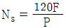
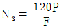
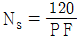
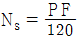
(정답률: 72%)
65. 배관이음 중 용접이음의 특징으로 옳지 않은 것은?
- 설비비와 유지비가 적게 든다.
- 나사식 이음보다 문제 발생이 적다.
- 누설의 조기발견과 처치가 중요하다.
- 정비를 위하여 중간에 유니언 이음쇠를 부착한다.
(정답률: 62%)
66. 다음 중 터보형 원심식 송풍기가 아닌 것은?
- 다익팬
- 한정부하팬
- 터보팬
- 레이디얼팬
(정답률: 48%)
67. 베어링 사용시 주의할 점 으로 옳지 않은 것은?
- 진동 또는 충격 하중에 견디도록 하여야 한다.
- 마찰에 의해서 발생하는 열을 흡수하여야 한다.
- 베어링의 압력과 미끄럼 속도에 따라 윤활유의 종류를 선정하여야 한다.
- 먼지 침입에 주의하여야 하고 윤활제의 열화에 적당한 조치를 하여야 한다.
(정답률: 74%)
68. 베어링의 주요기능으로 가장 거리가 먼 것은?
- 동력 전달
- 하중의 지지
- 마찰 감소
- 원활한 구동
(정답률: 56%)
69. 베어링을 적정한 틈새로 조립하기 위해 사용하는 것은?
- 부시
- 라이너
- 심 플레이트
- 베어링용 어댑터
(정답률: 65%)
70. 축이음의 종류 중 하중이 충격적이거나 진동을 일으키기 쉬운 경우에 주로 사용하는 것은?
- 원추 커플링
- 플랙시블 커플링
- 고정축이음
- 유니버셜 조인트 이음
(정답률: 71%)
71. 펌프 분해 검사에서 매일 점검항목이 아닌 것은?
- 베어링 온도
- 흡입 토출압력
- 패킹상자 에서의 누수
- 펌프와 원동기의 연결 상태
(정답률: 60%)
72. 펌프를 시운전할 때의 주의사항이 아닌 것은?
- 회전방향을 확인한다.
- 밸브 개폐에 주의한다.
- 공운전을 먼저 실시한다.
- 압력, 회전수 등을 확인한다.
(정답률: 75%)
73. 벨트의 종류 중 고무벨트에 관한 설명으로 옳지 않은 것은?
- 미끄럼이 적다.
- 비교적 수명이 짧다.
- 습기에 잘 견디고 기름에는 약하다.
- 무명에 고무를 입혀 만든 것으로 유연하다.
(정답률: 66%)
74. 터보팬에 관한 설명으로 옳은 것은?
- 축류식 팬의 일종이다.
- 베인 방향이 전향 베인이다.
- 원심송풍기 중 가장 크고 효율이 높다.
- 같은 주속도의 다른 팬보다 풍량이 적다.
(정답률: 67%)
75. 펌프의 부식을 촉진시키는 요인으로 옳지 않은 것은?
- 온도가 높을수록 부식되기 쉽다.
- 유속이 빠를수록 부식되기 쉽다.
- 산소량이 적을수록 부식되기 쉽다.
- 금속 표면이 거칠수록 부식되기 쉽다.
(정답률: 78%)
76. 구멍이 뚫린 강구를 90° 회전시켜 유로를 개폐하는 밸브는?
- 볼 밸브
- 디스크 밸브
- 체크 밸브
- 다이아프램 밸브
(정답률: 63%)
77. 스틸 플렉시를 커플링(steel flexible coupling) 이라고도 하며 축 유동 오차를 허용하여 동력을 전달시키는 커플링은?
- 체인 커플링
- 그리드 플렉시블 커플링
- 기어 커플링
- 플랜지 플렉시블 커플링
(정답률: 67%)
78. 기계를 분해할 때 주의하여야 할 사항으로 옳지 않은 것은?
- 무리한 힘을 가하지 않는다.
- 기계구조를 충분히 검토한다.
- 작은 부품은 상자나 통에 보관한다.
- 정비후 기어박스에 오일을 가득 채운다.
(정답률: 83%)
79. 10m 이하의 저향정 펌프에서 토출량을 조절할 수 있는 밸브는?
- 푸트 밸브
- 감압 밸브
- 체크 밸브
- 나비형 밸브
(정답률: 59%)
80. 그림과 같이 교차하는 두 축에 동력을 전달할 때 사용하며 잇줄이 곡선이고 모직선에 대하여 비틀려 있고 제작이 어려우나 이의 물림이 좋아 조용한 전동을 할 수 있는 기어는?
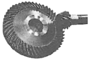
- 직선 베벨기어
- 크라운 베벨기어
- 제롤 베벨기어
- 스파이럴 베벨기어
(정답률: 79%)